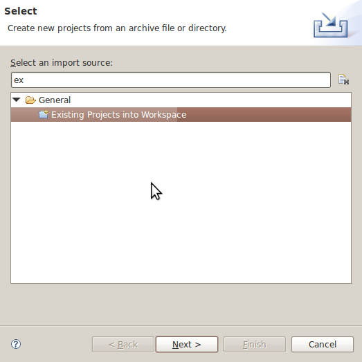
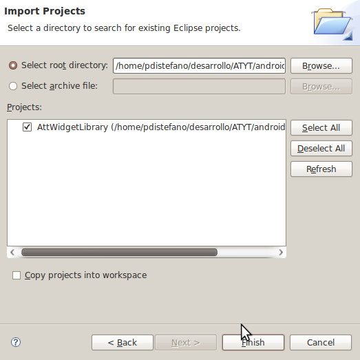
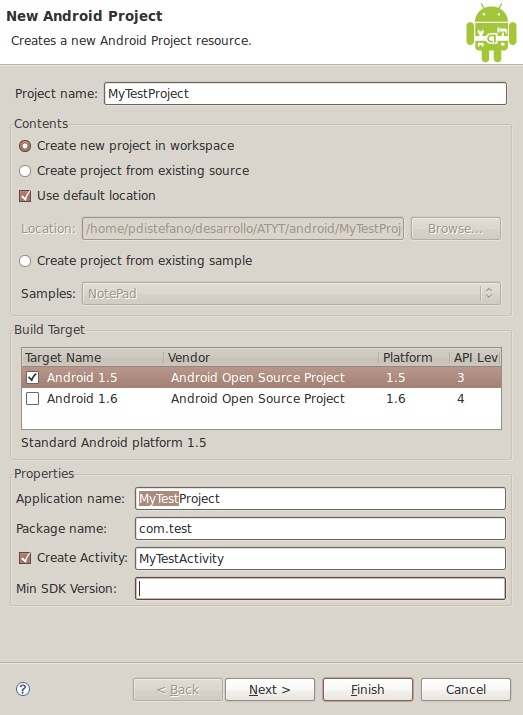
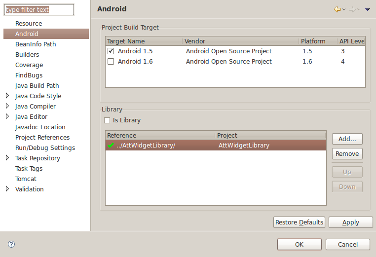

To start using the AT&T Android UI Elements, you will need to have the following software downloaded and installed:
We recommend visiting the developer guide which has many tutorials and demos.
1. The package contains several projects
2. Add the library project to your workspace
Menu File -> Import -> Import Existing Project into Workspace

3. Next, Finish

4. Create a new Android project

5. The component library should be selected as a dependency of any project you create. Access project properties in the Android section and add the AttWidgetLibrary as a dependency.

6. Please note that the xmlns:att attribute of a LinearLayout or RelativeLayout needs to point to the package containing your activity code. Example AT&T Android UI checkbox
<?xml version="1.0" encoding="UTF-8"?> <RelativeLayout xmlns:android="http://schemas.android.com/apk/res/android" xmlns:att="http://schemas.android.com/apk/res/com.att.checkbox" android:layout_width="wrap_content" android:layout_height="wrap_content" > . . . </RelativeLayout>
7. Start coding. You could start adding your components to your layout or java classes.